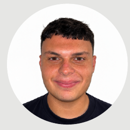

03/2026 — 06/2026
PhoneZay
Alumno Erasmus+ · Dundalk, Irlanda
Organización y reposición de productos en tienda, en un entorno laboral internacional.
EXPERIENCIA INTERNACIONALSoy Aimar, estudiante de Sistemas Microinformáticos y Redes, con experiencia práctica en soporte a usuarios y ganas de seguir creciendo en el sector IT.

Me interesa entender cómo funcionan los sistemas, conectar soluciones y ayudar a que la tecnología sea útil para las personas.
Estoy cursando el CFGM de Sistemas Microinformáticos y Redes y he complementado mi formación con experiencias de FP Dual, FCT y Erasmus+. He trabajado en contextos diferentes, desde la atención y el soporte a usuarios hasta el marketing y la organización en tienda.
Me adapto con facilidad, valoro el trabajo en equipo y busco una oportunidad donde seguir aprendiendo, aportar responsabilidad y desarrollar mis competencias técnicas.
Experiencia en diferentes equipos, funciones y entornos profesionales.
Alumno Erasmus+ · Dundalk, Irlanda
Organización y reposición de productos en tienda, en un entorno laboral internacional.
EXPERIENCIA INTERNACIONALAlumno FCT · El Sebadal
Colaboración en tareas de marketing y comunicación.
FORMACIÓN EN CENTRO DE TRABAJOAlumno FP Dual · Mesa y López
Atención y asesoramiento a clientes, con apoyo en la gestión diaria.
FP DUALAlumno FP Dual · Triana
Soporte a usuarios y resolución de incidencias.
SOPORTE INFORMÁTICOCPEIPS San Juan Bosco · Las Palmas de Gran Canaria
EN CURSO · 2.º CFGMCPEIPS San Juan Bosco · Las Palmas de Gran Canaria
IES El Batán · Las Palmas de Gran Canaria
Proyectos propios y experiencias que muestran iniciativa, creatividad y colaboración.
Aplicación de escritorio para Windows centrada en la monitorización del sistema y el diagnóstico del equipo. Un proyecto propio que combina Python, una interfaz gráfica y análisis de recursos.
Diseñé y publiqué una web para mi equipo de fútbol. Es un proyecto real que reúne mi interés por la tecnología con una necesidad de una comunidad deportiva.
Un juego creado como parte de un trabajo académico. El repositorio permite consultar el proyecto y revisar el código disponible.
Participé junto con mis compañeros de clase en la creación de una canción vinculada a las necesidades del barrio de El Batán. Una experiencia colectiva de expresión y colaboración.
Estoy interesado en oportunidades de prácticas y puestos junior relacionados con sistemas, redes y soporte informático.